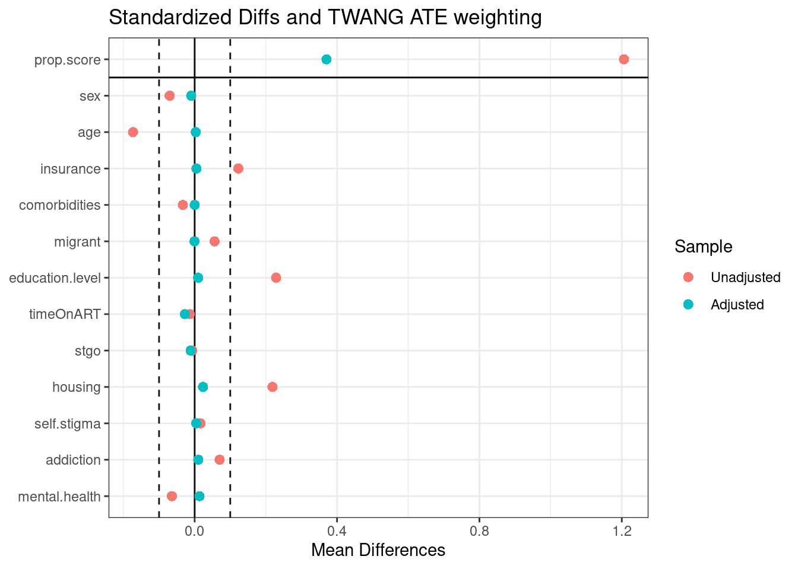

Code project HIV
Analysis data
Population
| Characteristic | 0, N = 7311 | 1, N = 721 |
|---|---|---|
| sex | ||
| men | 689 (94%) | 67 (93%) |
| women | 42 (5.7%) | 5 (6.9%) |
| age | 37 (31, 46) | 36 (30, 44) |
| employed | ||
| 0 | 191 (26%) | 28 (39%) |
| 1 | 540 (74%) | 44 (61%) |
| insurance | ||
| A/B | 354 (48%) | 40 (56%) |
| C/D | 377 (52%) | 32 (44%) |
| comorbidities | 228 (31%) | 24 (33%) |
| migrant | 194 (27%) | 22 (31%) |
| education.level | ||
| primary | 15 (2.1%) | 3 (4.2%) |
| secondary | 209 (29%) | 25 (35%) |
| Terciary | 507 (69%) | 44 (61%) |
| timeOnART | 416 (57%) | 38 (53%) |
| stgo | 706 (97%) | 71 (99%) |
| housing | 536 (73%) | 50 (69%) |
| self.stigma | 718 (98%) | 69 (96%) |
| addiction | 465 (64%) | 49 (68%) |
| mental.health | 472 (65%) | 48 (67%) |
| adherent | 491 (67%) | 35 (49%) |
| 0: Indetectable, 1: Detectable | ||
| 1 n (%); Median (IQR) | ||
| Characteristic | 0, N = 2191 | 1, N = 5841 |
|---|---|---|
| sex | ||
| men | 195 (89%) | 561 (96%) |
| women | 24 (11%) | 23 (3.9%) |
| age | 38 (30, 50) | 37 (31, 44) |
| VL.dectable | 28 (13%) | 44 (7.5%) |
| insurance | ||
| A/B | 127 (58%) | 267 (46%) |
| C/D | 92 (42%) | 317 (54%) |
| comorbidities | 74 (34%) | 178 (30%) |
| migrant | 50 (23%) | 166 (28%) |
| education.level | ||
| primary | 8 (3.7%) | 10 (1.7%) |
| secondary | 77 (35%) | 157 (27%) |
| Terciary | 134 (61%) | 417 (71%) |
| timeOnART | 126 (58%) | 328 (56%) |
| stgo | 213 (97%) | 564 (97%) |
| housing | 125 (57%) | 461 (79%) |
| self.stigma | 212 (97%) | 575 (98%) |
| addiction | 129 (59%) | 385 (66%) |
| mental.health | 152 (69%) | 368 (63%) |
| adherent | 148 (68%) | 378 (65%) |
| 0: Unemployed, 1: Employed | ||
| 1 n (%); Median (IQR) | ||
Employment status as outcome
Prepensity Score and weights
Propensity score was calculate using twang package. The variables included were: sex, age, insurance, comorbidities, migrant, education.level, timeOnART, stgo, housing, self.stigma, addiction, mental.health. ATE was the treatment effect selected
Table to see the balance before and after weight
| tx.mn | tx.sd | ct.mn | ct.sd | std.eff.sz | stat | p | ks | ks.pval | |
|---|---|---|---|---|---|---|---|---|---|
| sex | 0.039 | 0.195 | 0.110 | 0.313 | -0.299 | -3.106 | 0.002 | 0.070 | 0.412 |
| age | 38.560 | 9.534 | 40.484 | 12.507 | -0.184 | -2.066 | 0.039 | 0.107 | 0.053 |
| insurance | 0.543 | 0.499 | 0.420 | 0.495 | 0.245 | 3.128 | 0.002 | 0.123 | 0.017 |
| comorbidities | 0.305 | 0.461 | 0.338 | 0.474 | -0.071 | -0.889 | 0.374 | 0.033 | 0.995 |
| migrant | 0.284 | 0.451 | 0.228 | 0.421 | 0.126 | 1.646 | 0.100 | 0.056 | 0.701 |
| education.level | 1.697 | 0.496 | 1.575 | 0.565 | 0.235 | 2.810 | 0.005 | 0.102 | 0.072 |
| timeOnART | 0.562 | 0.497 | 0.575 | 0.495 | -0.028 | -0.349 | 0.727 | 0.014 | 1.000 |
| stgo | 0.966 | 0.182 | 0.973 | 0.164 | -0.039 | -0.513 | 0.608 | 0.007 | 1.000 |
| housing | 0.789 | 0.408 | 0.571 | 0.496 | 0.492 | 5.832 | 0.000 | 0.219 | 0.000 |
| self.stigma | 0.985 | 0.123 | 0.968 | 0.176 | 0.118 | 1.279 | 0.201 | 0.017 | 1.000 |
| addiction | 0.659 | 0.474 | 0.589 | 0.493 | 0.146 | 1.818 | 0.069 | 0.070 | 0.412 |
| mental.health | 0.630 | 0.483 | 0.694 | 0.462 | -0.134 | -1.727 | 0.085 | 0.064 | 0.533 |
| tx.mn | tx.sd | ct.mn | ct.sd | std.eff.sz | stat | p | ks | ks.pval | |
|---|---|---|---|---|---|---|---|---|---|
| sex | 0.046 | 0.210 | 0.056 | 0.230 | -0.041 | -0.627 | 0.531 | 0.010 | 1 |
| age | 38.715 | 10.005 | 38.680 | 10.466 | 0.003 | 0.042 | 0.967 | 0.032 | 1 |
| insurance | 0.519 | 0.500 | 0.514 | 0.501 | 0.010 | 0.112 | 0.911 | 0.005 | 1 |
| comorbidities | 0.312 | 0.464 | 0.312 | 0.464 | 0.000 | 0.003 | 0.997 | 0.000 | 1 |
| migrant | 0.269 | 0.444 | 0.270 | 0.445 | -0.001 | -0.008 | 0.994 | 0.000 | 1 |
| education.level | 1.674 | 0.507 | 1.669 | 0.510 | 0.010 | 0.121 | 0.904 | 0.005 | 1 |
| timeOnART | 0.564 | 0.496 | 0.592 | 0.493 | -0.055 | -0.621 | 0.535 | 0.028 | 1 |
| stgo | 0.969 | 0.174 | 0.980 | 0.140 | -0.063 | -1.001 | 0.317 | 0.011 | 1 |
| housing | 0.738 | 0.440 | 0.715 | 0.453 | 0.053 | 0.639 | 0.523 | 0.023 | 1 |
| self.stigma | 0.981 | 0.137 | 0.977 | 0.151 | 0.031 | 0.371 | 0.711 | 0.004 | 1 |
| addiction | 0.650 | 0.477 | 0.639 | 0.481 | 0.021 | 0.237 | 0.813 | 0.010 | 1 |
| mental.health | 0.645 | 0.479 | 0.632 | 0.483 | 0.029 | 0.303 | 0.762 | 0.014 | 1 |
| tx.mn | tx.sd | ct.mn | ct.sd | std.eff.sz | stat | p | ks | ks.pval | |
|---|---|---|---|---|---|---|---|---|---|
| sex | 0.049 | 0.215 | 0.060 | 0.238 | -0.047 | -0.673 | 0.501 | 0.011 | 1 |
| age | 38.801 | 10.088 | 38.910 | 10.595 | -0.010 | -0.132 | 0.895 | 0.024 | 1 |
| insurance | 0.519 | 0.500 | 0.503 | 0.501 | 0.032 | 0.368 | 0.713 | 0.016 | 1 |
| comorbidities | 0.312 | 0.464 | 0.335 | 0.473 | -0.050 | -0.565 | 0.572 | 0.023 | 1 |
| migrant | 0.270 | 0.444 | 0.263 | 0.441 | 0.016 | 0.181 | 0.856 | 0.007 | 1 |
| education.level | 1.676 | 0.506 | 1.659 | 0.518 | 0.034 | 0.413 | 0.680 | 0.015 | 1 |
| timeOnART | 0.567 | 0.496 | 0.571 | 0.496 | -0.008 | -0.094 | 0.925 | 0.004 | 1 |
| stgo | 0.969 | 0.174 | 0.977 | 0.151 | -0.045 | -0.637 | 0.524 | 0.008 | 1 |
| housing | 0.738 | 0.440 | 0.714 | 0.453 | 0.054 | 0.669 | 0.504 | 0.024 | 1 |
| self.stigma | 0.981 | 0.138 | 0.976 | 0.152 | 0.029 | 0.355 | 0.723 | 0.004 | 1 |
| addiction | 0.648 | 0.478 | 0.633 | 0.483 | 0.032 | 0.369 | 0.712 | 0.015 | 1 |
| mental.health | 0.644 | 0.479 | 0.636 | 0.482 | 0.016 | 0.181 | 0.856 | 0.008 | 1 |
n.treat n.ctrl ess.treat ess.ctrl max.es mean.es max.ks max.ks.p
unw 584 219 584 219 0.4920 0.1764 0.2186 NA
es.mean.ATE 584 219 549 153 0.0629 0.0265 0.0316 NA
ks.max.ATE 584 219 557 168 0.0539 0.0313 0.0239 NA
mean.ks iter
unw 0.0734 NA
es.mean.ATE 0.0118 3135
ks.max.ATE 0.0133 1174
These are graph to check the PS performance


var rel.inf
age age 41.431
housing housing 25.612
sex sex 7.982
comorbidities comorbidities 6.230
mental.health mental.health 4.947
insurance insurance 2.871
education.level education.level 2.783
migrant migrant 2.468
timeOnART timeOnART 2.341
addiction addiction 1.441
self.stigma self.stigma 1.287
stgo stgo 0.607
Regression models
I used two functions for determining ATE. One was svyglm from the survey package which returned robust standard errors (SE). The other was the glm package which returned inadequate SE, but use bootstrapping to get the confidence intervals.
Additionally, I calculated ATE using only weight and a double robust approach which consists in using the weights but also adjusting for the covariates (model specification). In that case, if one of the two methods is wrongly specify one still can get valid estimates
Robust standard errors
- Using only the weights
| term | estimate | std.error | statistic | p.value | conf.low | conf.high |
|---|---|---|---|---|---|---|
| (Intercept) | 0.149 | 0.240 | -7.94 | 0.00000000000000662 | 0.0932 | 0.239 |
| employed1 | 0.536 | 0.289 | -2.16 | 0.03137745776198725 | 0.3037 | 0.946 |
- Double robust estimates (DRE)
| term | estimate | std.error | statistic | p.value | conf.low | conf.high |
|---|---|---|---|---|---|---|
| (Intercept) | 1.910 | 1.7568 | 0.3682 | 0.7128 | 0.0607 | 60.07 |
| employed1 | 0.534 | 0.2930 | -2.1390 | 0.0327 | 0.3006 | 0.95 |
| sex1 | 0.799 | 0.5421 | -0.4147 | 0.6785 | 0.2755 | 2.31 |
| age | 0.974 | 0.0167 | -1.5981 | 0.1104 | 0.9421 | 1.01 |
| insurance1 | 1.017 | 0.2748 | 0.0602 | 0.9520 | 0.5928 | 1.74 |
| comorbidities1 | 1.327 | 0.2967 | 0.9531 | 0.3408 | 0.7411 | 2.38 |
| migrant1 | 1.142 | 0.3088 | 0.4298 | 0.6674 | 0.6229 | 2.09 |
| education.level1 | 0.310 | 0.7689 | -1.5231 | 0.1281 | 0.0685 | 1.40 |
| education.level2 | 0.242 | 0.7581 | -1.8740 | 0.0613 | 0.0545 | 1.07 |
| timeOnART1 | 0.983 | 0.2816 | -0.0606 | 0.9517 | 0.5656 | 1.71 |
| stgo1 | 1.710 | 1.0370 | 0.5172 | 0.6052 | 0.2233 | 13.09 |
| housing1 | 0.954 | 0.3112 | -0.1506 | 0.8804 | 0.5180 | 1.76 |
| self.stigma1 | 0.505 | 0.8105 | -0.8418 | 0.4001 | 0.1030 | 2.48 |
| addiction1 | 0.849 | 0.3014 | -0.5445 | 0.5863 | 0.4697 | 1.53 |
| mental.health1 | 0.899 | 0.3171 | -0.3369 | 0.7363 | 0.4822 | 1.67 |
Logistic regression and bootstrapping
- Uisng only weights
[1] "Employment: 0.536"[1] "95% CI: 0.301 - 0.955"- Double robust estimates (DRE)
[1] "Employment: 0.534"[1] "95% CI: 0.291 - 0.979"Table 1 | Baseline characteristics of weighted cohort
Stratified by employed
0 1 SMD
n 192.3 564.1
VL.dectable = 1 (%) 25.0 (13.0) 41.7 ( 7.4) 0.185
sex = 1 (%) 10.7 ( 5.6) 26.0 ( 4.6) 0.044
employed = 1 (%) 0.0 ( 0.0) 564.1 (100.0) NaN
insurance = 1 (%) 98.8 (51.4) 292.7 ( 51.9) 0.010
comorbidities = 1 (%) 60.0 (31.2) 176.1 ( 31.2) <0.001
migrant = 1 (%) 51.8 (27.0) 151.9 ( 26.9) 0.001
education.level (%) 0.011
0 3.6 ( 1.9) 10.5 ( 1.9)
1 56.4 (29.3) 162.8 ( 28.9)
2 132.2 (68.8) 390.8 ( 69.3)
timeOnART = 1 (%) 113.7 (59.2) 318.2 ( 56.4) 0.056
stgo = 1 (%) 188.4 (98.0) 546.5 ( 96.9) 0.071
housing = 1 (%) 137.4 (71.5) 416.4 ( 73.8) 0.053
self.stigma = 1 (%) 187.8 (97.7) 553.4 ( 98.1) 0.030
addiction = 1 (%) 123.0 (63.9) 366.5 ( 65.0) 0.021
mental.health = 1 (%) 121.4 (63.2) 364.0 ( 64.5) 0.028
adherent = 1 (%) 130.2 (67.7) 364.0 ( 64.5) 0.068 1 vs 2
VL.dectable 0.185139
sex 0.044156
employed NaN
insurance 0.010156
comorbidities 0.000308
migrant 0.000719
education.level 0.010957
timeOnART 0.055742
stgo 0.070517
housing 0.052636
self.stigma 0.029867
addiction 0.021294
mental.health 0.028446
adherent 0.067999